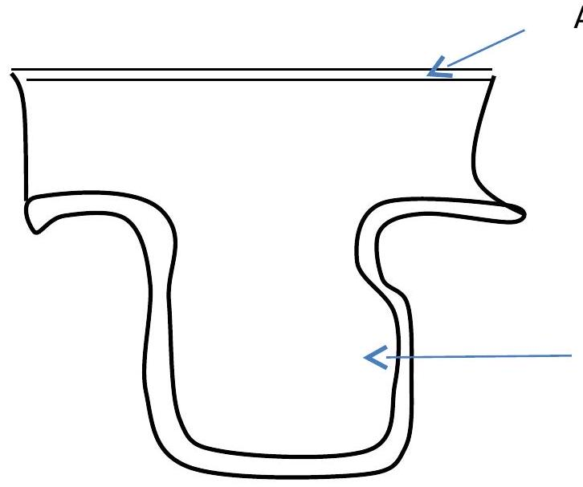

Vascular Conditions
ANEURYSM
Is an out pouching or dilation of the vessel wall.
Causes
Atherosclerosis
- Atherosclerotic plague formation causes degenerative changes in the blood vessel affected (mainly artery) leading to loss of elasticity; weakening & dilation.
- Congenital predisposition
- Infections i.e. bacterial or viral
- Trauma
Classification of aneurysm
A True
B False (pseudo aneurysm)
A true aneurysm is one in which the wall of the artery forms the aneurysm, with at least one vessel layer still intact.
True aneurysms are further sub-divided into fusiform and saccular types. A fusiform aneurysm is circumferential and relatively uniform in shape i.e.
True saccular aortic aneurysm
False aneurysm (pseudo aneurysm) is not an aneurysm but a disruption of an arterial wall layers with bleeding that is contained by surrounding anatomic structures.
False aneurysms may result from trauma or infection.
Clinical manifestations
- Chest pain
- Hoarseness from pressure on the laryngeal nerve
- Dysphagia due to pressure on the esophagus
- Jugular nervous distention
- Edema of the face & arms
Complications of aneurysms
Rupture of the aneurysm leading to death
MANAGEMENT OF ANEURYSM
Involves surgical repair
Pre-operative care
- Hydrate patient with IV fluids & correct electrolyte abnormalities
- Psychological care
- Physical preparation
- Starve patient from mid night of the day prior to surgery
Post-operative care
- Monitor ECG
- Assess level of censoriousness e.g. pupil size response to light, etc.
- Monitor vitals. Observe aseptic technique to prevent spread of infection.
- Give analgesia as prescribed for pain control.
- Check and record peripheral pulses hourly.
- Encourage early ambulation. Assess for bowel sounds for return of peristalsis.
- Record intake and output to monitor renal perfusion status. Instruct patient & care giver to gradually increase activities after discharge.
- Advice patient to avoid heavy lifting for 6 weeks post operatively to avoid excessive pressure.
- Advice patient to report signs of redness, swelling, increased pain and fever to the health care provider as these are signs of complications.
VARICOSE VEINS
Also called varicosities. Are dilated tortuous subcutaneous veins commonly found in the saphenous vein system. Primary varicosities are due to congenital weakness of the veins and are more common in women.
Secondary varicose veins result from a previous venous thromboembolism. They may occur in the esophagus (esophageal varices, vulva, sparmatic cords (varicoceles) and anorectal area (hemorrhoids).
Causes /Risk Factors
- Chronic cough
- Constipation
- Family history of venous disease
- Female gender
- Use of oral contraceptives
- Age
- Obesity
- Pregnancy
- Occupations that require prolonged standing.
Pathophysiology
In varicose veins, the vein valve leaflets are stretched & become incompetent (do not fit together properly). Incompetent vein valves allow retrograde blood flow especially when the patient is standing, resulting in increased venous pressure & further venous distention.
Clinical manifestations
- Discomfort
- Disfigurement (cosmetic)
- Pain after prolonged standing
- Swelling
- Noctural leg cramps
NURSING MANAGEMENT
- Advice patient to avoid sitting or standing for long periods of time.
- Advice patient to maintain ideal body weight.
- Advice patient to avoid wearing constrictive clothing and walk daily.
- Advice patient to apply stockings in bed and before rising in the morning.
VENOUS THROMBOSIS
Venous thrombosis involves the formation of a thrombus in association with inflammation of the vein. Classified into: -
- Superficial vein thrombosis
Is the formation of a thrombus in a superficial vein.
- Deep vein thrombosis (DVT)
is a disorder involving a thrombus in a deep vein, most commonly the iliac and femoral veins.
Causes
-
Venous stasis
Occurs when the valves are dysfunctional or the muscles of the extremities are inactive. It occurs most frequently to people who are: -
- Obese
- Pregnant
- Chronic heart failure
- Prolonged surgical procedure e.g. orthopaedic surgery (especially lower extremity)
- Prolonged immobility e.g. spinal cord injury, fractured hip, bed rest, stroke, varicose veins.
-
Endothelial damage
Damage to the endothelium of the vein may be caused by: -
- Abdominal & pelvic surgery
- Fractures of the pelvis, hip or leg
- I.V drug abuse
- Trauma
Damaged endothelium stimulates platelet activation and initiates the coagulation cascade. This results in decreased fibrinolytic capabilities and predisposes the patient to thrombus development.
-
Hypercoagulability
Hypercoagulability of blood occurs mainly in these conditions: -
- Cigarette smoking
- Dehydration or malnutrition
- Oral hormone replacement therapy
- Malignancies esp. breast, brain, hepatic, pancreatic & gastro intestinal
- Oral contracepatientives especially in women over 35 years of age
- Pregnancy & postpartum period.
- Sepsis
- Severe anaemia
Pathophysiology
Localized platelet aggregation and fibrin entrap red blood cells (RBCs WBCs and move platelets to form a thrombus.
As the thrombus enlarges, increased numbers of blood cells & fibrin collect behind it, producing a larger clot with a "tail" that eventually occludes the lumen of the vein.
If the thrombus does not become detached, it undergoes lysis or become firmly organized and adherent within 5-7 days.
The organized thrombi may detach and result in emboli. Turbulence of blood flow is a major contributing factor to embolization. The thrombus can become an embolus that flows through the venous circulation to the heart and lodges in the pulmonary circulation, becoming pulmonary emboli.
Clinical manifestations of superficial vein thrombosis
- Tenderness on the area surrounding the vein
- Fever
- Warmth and redness on the area surrounding the vein
- Pain
- Edema
MANAGEMENT
Administer anticoagulants i.e. heparin. Advice patient to wear anti emboli stocking to help reduce edema. Advice patient to perform mild exercise such as walking to help increase endogenous fibrinolysis.
Deep venous thrombosis
Clinical manifestations
- Leg edema
- Pain on the affected limb
- Fever
- Warmth on touch
- Tender to palpation
Complications
Pulmonary embolism. Chronic venous insufficiency which results from valvular destruction, allowing retrograde venous blood flow.
MANAGEMENT
Preventive measure includes mobilization of patients that can ambulate. Turn patient on bed rest two hourly. Encourage patients to wear anti embolic stockings to increase venous blood flow velocity, prevent venous wall dilation and improve venous valve function.
Give anticoagulants to prevent clot formation or to prevent propagation of the clot and development of any new thrombi.
Examples of anticoagulants are vitamin k antagonists, warfarin etc. Instruct the patient to avoid constrictive clothing. Give a well-balanced diet including calcium and vitamin E as these affect coagulations. Encourage proper hydration to prevent additional hypercoagulability of the blood, which may occur with dehydration.
Encourage exercise as tolerated by the patient.
Related Definitions
Phlebitis
This is the inflammation i.e. (redness, tenderness warmth, mild edema) of a superficial vein without the presence of a thrombus (clot).
Embolism
An abnormal condition in which an embolus travels through the blood stream and become lodged in a blood vessel. Symptoms vary with the character of the embolus, the degree of occlusion that results and the size, nature and location of the occluded vessel.
Atherosclerosis
A common disorder characterized by yellowish plague of cholesterol, other lipids and cellular debris in the inner layers of the walls of arteries. It usually occurs with aging & is often associated with tobacco use, obesity, hypertension, elevated low density lipoprotein and depressed high density lipoprotein levels, and diabetes mellitus. The condition begins as a fatty streak and gradually builds to a fibrous plague or atheromatous lesion. The vessel walls become thick, fibrotic and calcified & the lumen narrows, resulting in reduced blood flow to organs normally supplied by the artery. The plague eventually creates a risk for thrombosis & is one of the major causes of coronary heart disease, angina pectoris, Myocardial infarction etc.
Arteriosclerosis
A disorder characterized by thickening, loss of elasticity and calcification of aerial walls. It results in decreased blood supply to the cerebrum, & lower extremities. The condition develops with aging & in hypertension, diabetes mellitus etc.
Gangrene
Necrosis or death of tissue, due to ischemia or bacterial invasion. It occurs as a complication of diabetes mellitus where the lower extremities become gangrenous.